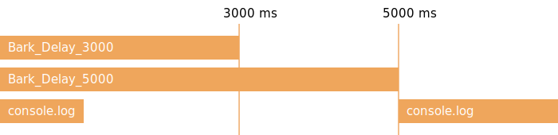
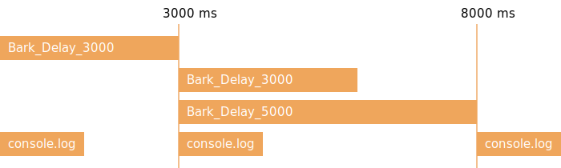

May 27, 2017
Javascript 非同步編程
什麼是 Promise#
Promise專門用來處理異步問題，像是某人承諾幫你完成某件事情
在他完成之前你可以繼續處理自己手邊的工作，當然你也可以選擇等他回來再繼續
在開始之前#
先來看看在沒有 Promise 之前
是怎麼處理異步問題的吧！痛過之後你才會懂得他的好
如果你非常熟 CallBack Hell ，你可以選擇跳過這段
下面這是一段很尋常的代碼
const Bark = () => {
console.log("汪汪")
}
Bark()
console.log("我會在汪汪後執行")
但如果 Bark 是一個異步方法，情況就不同了
// Bark還是上面那個喔
const Bark_Delay = () => {
setTimeout(() => {
Bark()
},1000)
}
Bark_Delay()
console.log("我會在汪汪後執行")
為了讓程式碼能正確執行
我們把叫完之後要做的事包成 CallBack
等異步方法做完時呼叫
const Bark_Delay_Callback = callBack => {
setTimeout(() => {
Bark()
callBack()
},1000)
}
Bark_Delay_Callback(() => {
console.log("我會在汪汪後執行")
})
如此程式碼就可以正常執行了
但是如果情況越來越複雜
程式碼會越來越複雜,可讀性也會越來越低
以常見 Ajax 的狀況來說
程式碼可能長得像下面這樣
// 不用讀懂，我只是想讓你知道它長的很噁心
const getUserProfile = (account, password, callBack) => {
checkAuth(account, password, auth => {
if(!auth){
return "權限錯誤"
}
fetchUserProfile(auth, (error,rawData) => {
if(error){
return error
}
parseUserProfile(rawData, (error,profile) => {
if(error){
return error
}
// 第一個參數必須回傳 undefined
// 表示沒有錯誤
callBack(undefined,profile)
})
})
})
}
getUserProfile("account", "password", (error,profile) => {
if(error){
console.error(error)
}
console.log("取得使用者資料成功")
})
是的，這個波動拳 (CallBack Hell) 是相當難維護的
為了解決如此窘境，Es6 加入了 Promise
Promise 正式登場！#
我們一邊改寫 Bark 代碼一邊說明吧
const Bark_Delay_Promise = () => {
return new Promise((resolve, reject) => {
// 呼叫 resolve ，告知 Promise 事件完成時
// 呼叫 reject ，告知 Promise 有錯誤發生完成時
setTimeout(() => {
Bark()
resolve("這個字串會傳進 then 裡面的 value")
},1000)
})
}
Bark_Delay_Promise()
.then(value => {
// value = "這個字串會傳進 then 裡面的 value"
console.log("我會在汪汪後執行")
return "還可以繼續往下傳"
})
.then(value => {
console.log(value)
})
.catch(error => {
console.error("Oops！好像哪邊爆炸了！")
})
console.log("Promise 是異步的，所以我是第一行")
Promise 在建構的時候必須傳入一個 CallBack
CallBack 會傳入兩個方法：
- resolve
完成時呼叫
當 resolve 被呼叫會執行Promise.then - reject
出錯時呼叫
當 reject 被呼叫會執行Promise.catch
使用 Promise 最顯著的優點就是解決了 CallBack Hell的問題
CallBack 可以使用 Promise.then 不斷連，錯誤處理也變得更簡潔
剛剛上面那段很噁心的波動拳可以改成這樣
const getUserProfile = (account,password,callBack) => {
return checkAuth(account,password)
.then(auth => {
if(!auth){
throw "權限錯誤"
}
else{
return fetchUserProfile(auth)
}
})
.then(rawData => {
return parseUserProfile(rawData)
})
}
getUserProfile("account", "password")
.then(profile => {
console.log("取得使用者資料成功")
})
.catch(error => {
console.error(error)
})
等待多個異步方法#
你可以使用 Promise.all 來等待多個 Promise完成
執行流程

const Bark_Delay_3000 = () => {
return new Promise((res,rej) => {
setTimeout(() => {
Bark()
res(new Date().toLocaleTimeString())
},3000)
})
}
const Bark_Delay_5000 = () => {
return new Promise((res,rej) => {
setTimeout(() => {
Bark()
res(new Date().toLocaleTimeString())
},5000)
})
}
var promises = [
Bark_Delay_3000(),
Bark_Delay_5000()
]
Promise.all(promises)
.then(values => {
console.log("--Promise.all--")
console.log("Bark_Delay_3000:\t"+ values[0])
console.log("Bark_Delay_5000:\t"+ values[1])
})
console.log("前面都是異步，所以我會是第一行")
Promise.all 傳入一個 Promise Array，並回傳一個 Promise
當 Array 裡的 Promise 全部完成的時候，執行 Promise.then
Promise.then 會接到所有 Promise 回傳的值，他也是一個 Array
這麼一來就可以等待多個 Promise
可以執行複雜的異步的任務
Async/Await#
先來看一張流程圖吧

Bark_Delay_3000()
.then(value => {
console.log("Bark_Delay_3000:\t" + value)
return Promise.all([
Bark_Delay_3000(),
Bark_Delay_5000(),
])
})
.then(values => {
console.log("--Promise.all--")
console.log("Bark_Delay_3000:\t"+ values[0])
console.log("Bark_Delay_5000:\t"+ values[1])
})
console.log("Bark_Delay_3000 是異步的，所以我會是第一行")
如果以 Promise 的寫法
Promise 仍是不斷 then 下去，維護難度也跟著提高
也因為如此在 Es7 加入了Async/Await
const Bark_Async_Await = async() => {
var value = await Bark_Delay_3000()
console.log("Bark_Delay_3000 :\t " + value)
values = await Promise.all([
Bark_Delay_3000(),
Bark_Delay_5000()
])
console.log("--Promise.all--")
console.log("Bark_Delay_3000:\t"+ values[0])
console.log("Bark_Delay_5000:\t"+ values[1])
}
Bark_Async_Await()
console.log("Bark_Async_Await 是異步的，所以我會是第一行")
這兩段程式碼是等價的
await 只能用在有 async 修飾的 Function
await 後面必須接上 Promise，會等待 Promise 執行完畢後直接回傳
免除了要寫在 Promise.then 的麻煩
如此程式碼就可以長得跟同步執行一模一樣
可讀性更高，也更容易維護